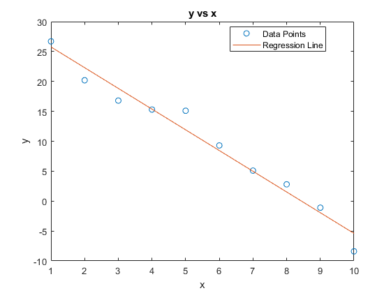
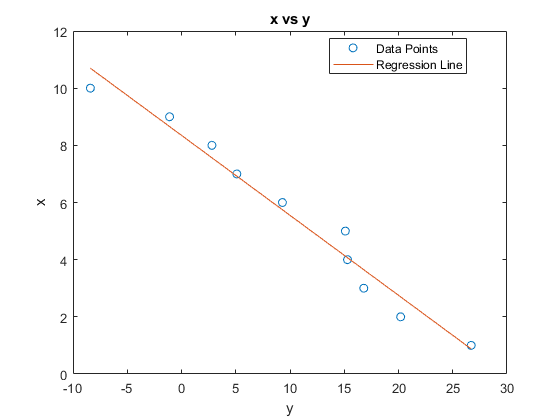

x = [1,2,3,4,5,6,7,8,9,10];
y = [26.7 20.2 16.8 15.3 15.1 9.3 5.1 2.8 -1.1 -8.4];
n = length(x);
a1 = (sum(y)*sum(x.^2) - sum(x)*sum(x.*y))/ (n*sum(x.^2) - sum(x)^2);
b1 = (n*sum(x.*y) -sum(x)*sum(y))/(n*sum(x.^2) - sum(x)^2);
y1 = a1 + b1*x;
fprintf("\nEquation of line is y = (%.4f) + (%.4f)x",a1,b1)
fprintf("\nAt x = 7.2, y = %.3f",a1+b1*(7.2))
plot(x,y,"o",x,y1)
xlabel("x"); ylabel("y")
title("y vs x")
legend(["Data Points","Regression Line"],'Location','Best')
p = polyfit(y,x,1);
fprintf("\n\nEquation of line is x = (%.4f) + (%.4f)y",p(2),p(1))
x_15 = polyval(p,15);
fprintf("\nAt y = 15, x = %.3f\n",x_15)
figure(2)
plot(y,x,"o",y,polyval(p,y))
xlabel("y"); ylabel("x")
title("x vs y")
legend(["Data Points","Regression Line"],'Location','Best')
Equation of line is y = (29.2267) + (-3.4630)x
At x = 7.2, y = 4.293
Equation of line is x = (8.3484) + (-0.2798)y
At y = 15, x = 4.151
 